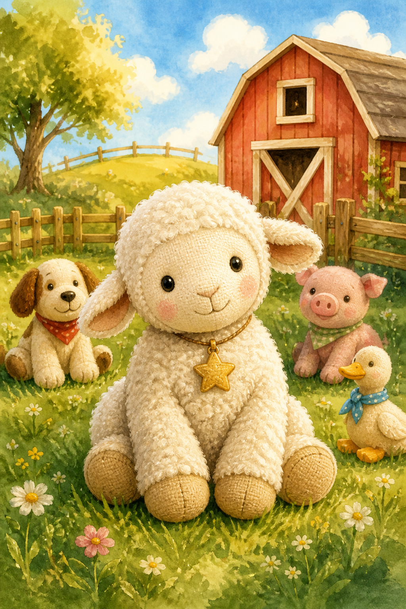

Star of the Toy FarmBook 1 · A diary of purpose, friendship & belonging
From a kid, to a kid
Revised edition · 12 chapters (agreed outline with Anshika). Continues in Star and the Midnight Feast.
Star is a toy sheep who wonders why she exists. When she becomes Sophia’s birthday gift, she finds friends on the toy farm — but a missing cow named Mia pulls her into her first real adventure.
Main characters
Book 1 chapters
On the Shelf
I lived on a shelf in a toy shop, right near the window. Every morning, sunlight poured onto my wool, and every evening I watched the street lights blink awake. I was a toy sheep — soft, quiet, and very curious.
From my shelf I could see people walking past with shopping bags, dogs tugging on leads, and children pressing their noses to the glass. Sometimes a child would point at me and smile. That was the best feeling in the world. Then they would leave, and I would wonder again.
Why was I here? What was I for?
The other toys around me seemed so sure of themselves. The teddy bears looked cuddly. The racing cars looked fast. The dolls looked ready for tea parties. I only knew how to sit still and watch.
At night, when the shop closed and everything grew quiet, I stared at the moon through the window and whispered to myself, “One day, someone will choose me. One day, I will know why I exist.”
I did not know then that my day was almost here.
Chosen (and Wrapped!)
It happened on a busy afternoon. A kind-looking couple stopped in front of my shelf. The lady picked me up carefully and turned me around, checking my soft ears and little blank tag.
“She’s perfect,” she said. “Sophia has been wanting a sheep for her toy farm.”
“Then she’s coming home with us,” the man replied.
Home? Farm? Sophia?
Before I could even understand those words, they carried me to the counter. Money changed hands. A bag rustled. Then — oh no! — they put paper all around me!
It was congested inside. There was hardly a finger’s gap. I almost couldn’t breathe (well, toys don’t really breathe, but it felt like that!). It was dark and scary. I wished I could go back to my shelf and look outside the window. There wasn’t even a tear to peep through!
I wondered, “What is going to happen to me…?!”
I was scared… and a little excited too. Somewhere out there, a girl named Sophia was waiting — and I was going to be her birthday present.
Birthday Morning
It was a long day in the package. I could see only dark darkness all around me, like the night would never end. I kept falling from places and bumping into things.
Finally, I heard faint voices. “It’s almost time — we’ve got to get ready. She’ll be up any moment now!”
Suddenly someone grabbed me tightly and took me to a room.
“Sophia, wake up! It’s your birthday and we’ve got a present for you!”
“Finally! I’ve been waiting for ages for this day!”
Slowly, the paper around me tore off. It was like magic, and I was so glad to be out of that package.
“Oh, thank you so much, Mummy and Daddy — it’s just what I wanted! Now my toy animal collection is almost complete!” said Sophia.
She hugged me tightly, like she wouldn’t let me go. She carried me through the morning wearing a huge grin. After breakfast, she placed me in a toy farm filled with animals just like me.
Bundle and a Purpose
“Hello!” said a toy dog. “Welcome to our family. We are happy to meet you!”
“Hello — it’s nice to meet you. Why are we here?” I asked.
“We belong to Sophia,” he said. “She washes us, plays with us, feeds us, and more. Don’t worry — she’s the best owner a toy could wish for.”
Those words changed something inside me. They made me realise I might have a purpose — to give children joy and company. I never forgot them.
“Is everything okay?” asked my new friend.
“I guess so… but I didn’t know I even served a purpose until today.”
“That’s how I felt when I came here,” he replied. “Not only do we serve a purpose — everything does.”
I noticed that every animal except me had a tag.
“What’s that for?” I asked.
“It’s a piece of paper with our names. My name is Bundle,” he said. “Of course you’ll get a name too. Every toy has a name.”
My Name is Star
Just then Sophia came and picked me up.
“I’ve just decided on a name for you. Your name is Star, as you are the brightest of my toys,” she said.
She tied a tag around my neck which said Star. I belonged in the toy farm — and now I had a name of my own.
That afternoon the farmyard buzzed. I met Pinky the pig, who snorted hello; Flappy the duck, who already had her eye on a little pond; and Lina the cat, who loved climbing (though she never liked climbing back down).
There were other toys too, of course — a whole soft farm — but those three grinned at me first, and that was enough for one day.
I was really starting to enjoy myself.
Bedtime (and the Door)
I was playing happily when I suddenly felt very tired. I’d never felt tired before.
“Time for bedtime,” said Sophia.
“Bedtime?” I exclaimed. “What’s that?!”
“We close our eyes till the sun rises,” replied Bundle.
“It sounds scary!”
“It’s not. You’ll love it. Let’s go to our hay beds.”
Lina slept next to me. “Good night,” said someone softly. “Umm… good night?” I replied. At first it was difficult to sleep — then sleep came so suddenly.
I woke bright and early and went out to explore. Near the farmyard I noticed a little door that stood slightly open.
“What’s out there?” I asked.
Bundle shuddered. “Nobody knows. Once there was a cow named Mia… and then she went through that door. She promised she’d come back. She hasn’t — not really. Not to stay.”
I was silent all morning, thinking about the door.
Is it calling me? I don’t know. Somehow I knew I was going to have to ask Sophia.
The Silver Monster
So I ventured out of my farmyard home, wondering where to go.
As I explored the house, I saw something big, scary and silver. Before I knew it, it was leaning towards me! I ran as fast as my little toy legs could go — then I remembered: the silver monster couldn’t climb. So I ran towards higher ground.
(Grown-ups call it a vacuum cleaner. I still call it a monster.)
I couldn’t find Sophia at first — she found me! She scooped me up.
“Star, you really need to be careful,” she said gently. “Especially when Mum and Dad are around. They mustn’t know you move and talk. Only I can hear you — and only when we’re alone. That’s our rule.”
“I need to ask you something,” I said in my toy way. “What’s outside the door opposite the farm? Mia is out there somewhere. Can’t we find her? We really miss her.”
Sophia smiled. “Then let’s go look.”
Finding Mia
We went out and looked. We searched under the garden bench. We searched behind the flower pots. We even checked the shady place where the hose curls like a snake.
“Maybe she’s over there,” I suggested. We went again.
Then we took a wrong turn past the compost heap. Something rustled. I froze — but it was only a leaf.
We almost lost hope… when I saw her!
Mia told us her story. She had only one motive: to find out if outside was really dangerous. And she found real grass that tasted better than any grass she had ever eaten — soft, fresh and tender. She lived on it for months. Every now and then, water appeared from nowhere and poured from the sky. It was scary at first, but she adjusted.
“Till now,” Mia said. “But now that I’m back, I’ll be your friend. I might visit the grass sometimes… but I won’t disappear without saying.”
Sophia said, “Come on in — and you can tell me your story.”
Farmyard Leaders
We went inside.
“Star!” exclaimed Bundle. “Thank goodness you’re back!” Then he saw Mia. “Is that you? I thought you were gone for good!”
“I promised I’d come back,” said Mia. “Didn’t you believe me when I said that?”
“I missed you,” Bundle whispered.
“You both have done great service to the farm,” said Sophia, “and I think it’s a good idea to let you be the farmyard leaders. Whatever that means!”
“It means you tell the rest of the group things and give orders when things need doing,” explained Bundle. “Leaders!”
As leaders, we had to ensure everyone was safe and sound while Sophia went to school.
“Next year I’ll come back a bit later,” Sophia told us, “so you’ll have to manage without me a little longer.” She had already explained how to evacuate in case of a storm.
I felt very proud to be a leader.
The Mountain Day
Saturday was our favourite day — Sophia got the whole day with us.
She came home with an excited expression. “We’re climbing the hill tomorrow — and of course you’re coming! I can’t wait.”
“Last time, under the big clouds, I got scared of being outside,” I protested.
“If we get wet she puts us into the hide,” said Flappy.
Next morning we packed. Mia and I almost forgot first aid — luckily Bundle reminded us. We packed chilly-weather gear and some grass for snacking. As soon as Sophia closed the bag, I turned on my brave face.
As she climbed, she panted and puffed. “Maybe she needs encouragement,” I suggested. We banged the side of the bag with all our might. Sophia jumped, opened it, and pretended to her dad that she only wanted a sandwich. We whispered courage in her ear when no grown-ups were looking — then stopped for a picnic breakfast.
At the top, the view was truly magical. Cities, villages, hills. I’d never seen so much in my life. We had a scrumptious lunch of hillside grass. Even Mia agreed it was better than anything before.
That night, in the little tent, Sophia made up a tiny story with us: a prince, a princess, a forest, and a happy ending in about five lines. Then sleep. Going home the next day wasn’t hard — though ordinary mornings afterwards felt small!
When Sophia Is Poorly
Sophia didn’t go to school the next day. Bundle whispered, “Maybe she’s unwell.”
We hid behind curtains and sneaked into her room. Sophia was in bed, sneezing and coughing. She looked tired — then she cheered up when she saw us.
“I have an allergy and didn’t carry a scarf when there was too much dust,” she whispered. “Mum mustn’t know you’re nurses.”
As soon as her mother left, we looked after her. We were the nurses and doctors. We made her day better.
Later that afternoon the silver monster growled again in the hallway. It almost swallowed Pinky’s ear — Bundle yanked her free, and we all froze like ordinary toys until Mrs Johns wheeled the monster away. Then we laughed so hard we had to bury our faces in the quilt.
Purpose isn’t only big mountains. Sometimes it’s sitting still beside someone who feels poorly.
A Family
I can’t believe how much I’ve learnt.
Not long ago, I didn’t even know why I existed. Fast forward to now — I’d become a farmyard leader, found Mia, gone on a trek, survived a monster, and cared for Sophia when she needed us.
But most importantly, I had a family.
And that is the best thing I could ever own.
— Star
(From a kid, to a kid)
A tiny tip from Star:
- Ask a new friend’s name — and what it means.
- Invent a silly game while you wait (stacking apples works).
- Keep a diary. Every diary’s story is different.
The End of Book 1
Continue to Book 2: Star and the Midnight Feast →
Revised from Anshika’s notebooks into the agreed 12-chapter Book 1 shape. Spelling lightly polished for reading clarity.